OnBook
Разработка дизайна админ-панели для библиотеки аудиокниг
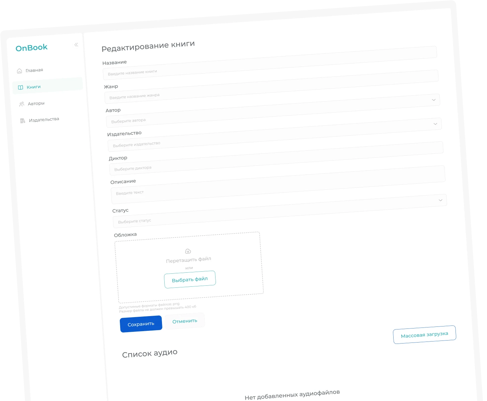
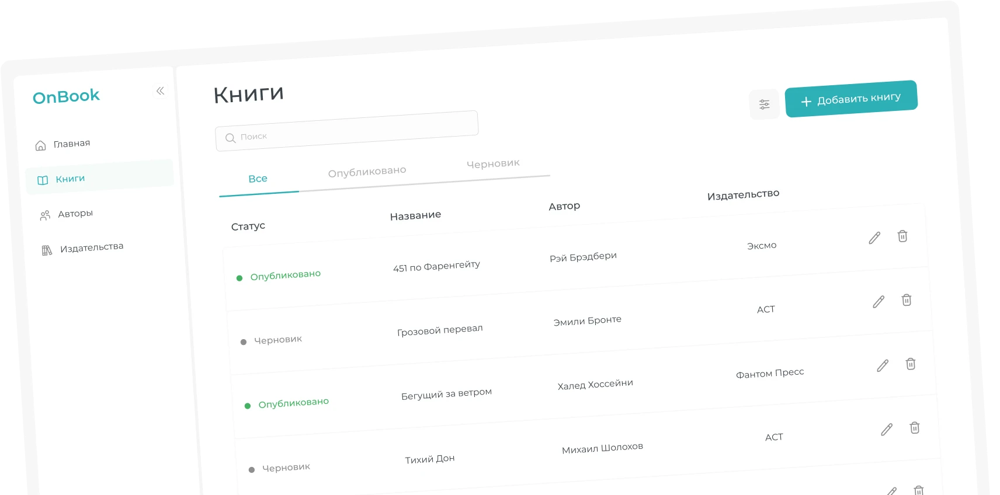
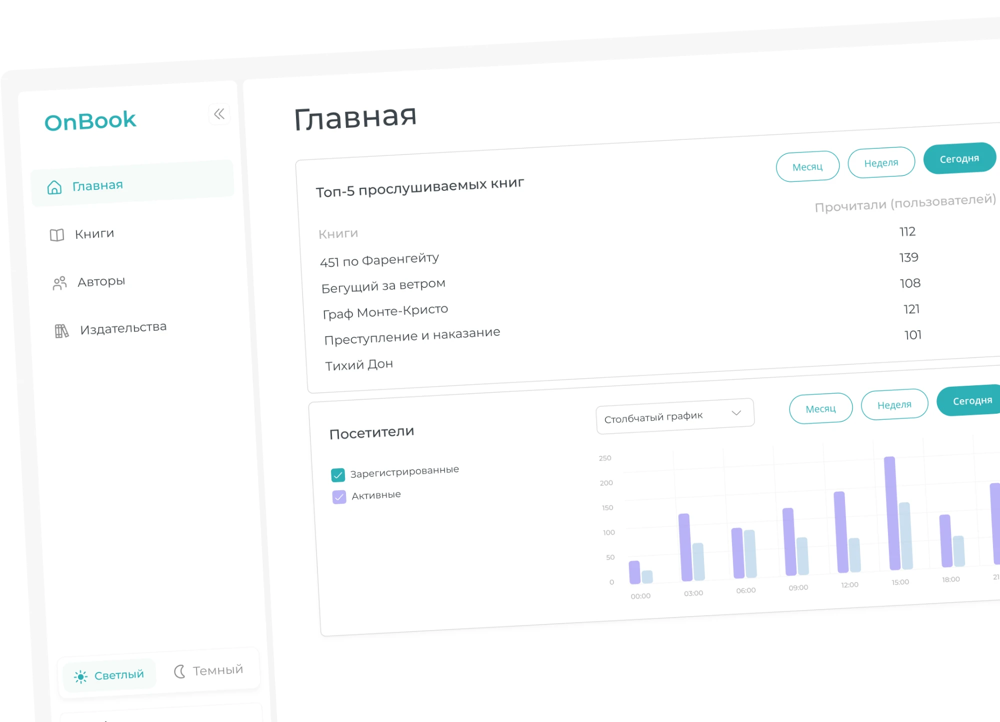
OnBook — сервис для прослушивания и скачивания аудиокниг в разных жанрах.
Для внутренней команды — система, через которую контент-менеджеры загружают, редактируют и поддерживают библиотеку.
Аудитория
Основные пользователи админ-панели — контент-менеджеры, которые загружают аудиокниги.
Так как пользователи админки не всегда технически подкованные, интерфейс должен был быть максимально простым, понятным и предсказуемым. Важно было снизить количество лишних действий и сделать так, чтобы человек мог быстро выполнить задачу без долгого обучения.
Команда и моя роль
Над проектом работали владелец продукта, разработчики и я как единственный дизайнер.
Я отвечала за полный цикл дизайна: провела UX-аудит старой админки, выделила ключевые проблемы, спроектировала новые пользовательские сценарии, подготовила UI-kit, прототипы и handoff для разработки.
Проблема
Раньше на публикацию одной книги мог уходить примерно час: контент-менеджеру нужно было загружать и проверять аудио, выбирать автора и редактировать информацию через неудобные сценарии.
При большом объёме контента это сильно замедляло работу команды. Чем дольше загружалась одна книга, тем меньше контента команда успевала публиковать.
Цель
Целью было ускорить загрузку и редактирование аудиокниг, снизить когнитивную нагрузку на контент-менеджеров и сделать админ-панель удобной для ежедневной работы.
Ограничения: сохранить существующий функционал и быстро собрать рабочее решение. Поэтому фокус был не на полном переосмыслении продукта, а на точечном улучшении самых болезненных сценариев.
Подход
Я начала с UX-аудита старой админки и анализа реальных рабочих сценариев.
Дополнительно я учитывала обратную связь от команды и список проблем от владельца продукта. Так как я сама работала с этой панелью как контент-менеджер, я могла оценить не только визуальные проблемы, но и реальные точки потери времени.
Удобное редактирование книги
Я спроектировала страницу книги как рабочий центр, где можно быстро управлять основной информацией.
Это сократило количество переключений и сделало сценарий редактирования более прямым: пользователь открывает книгу и сразу видит всё, что может изменить или проверить.
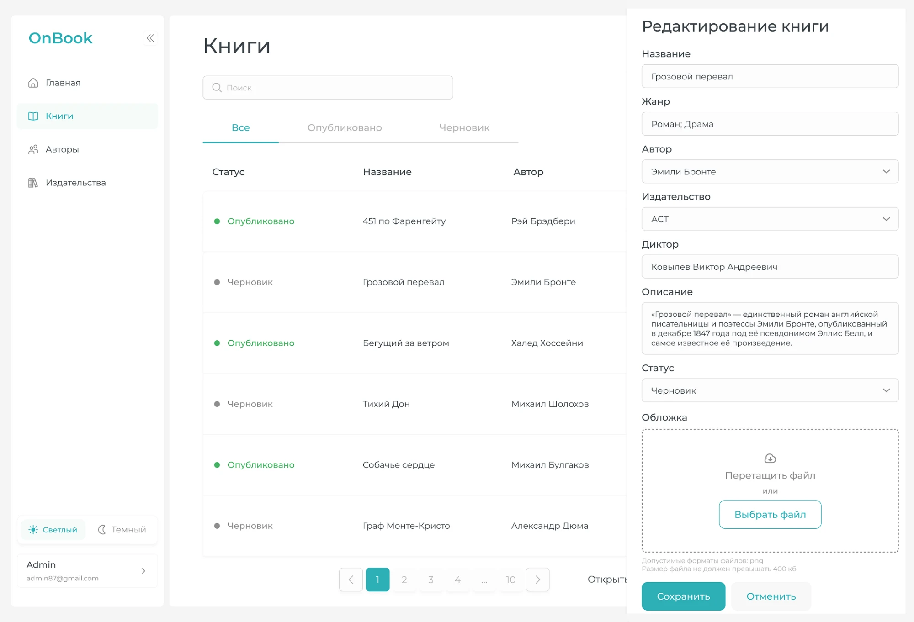
Удобный выбор автора
В старом интерфейсе появлялось большое окно с множеством вариантов, и найти нужного автора было неудобно.
Я заменила этот сценарий на селект с поиском. Теперь контент-менеджер может начать вводить имя автора и быстро выбрать нужный вариант.
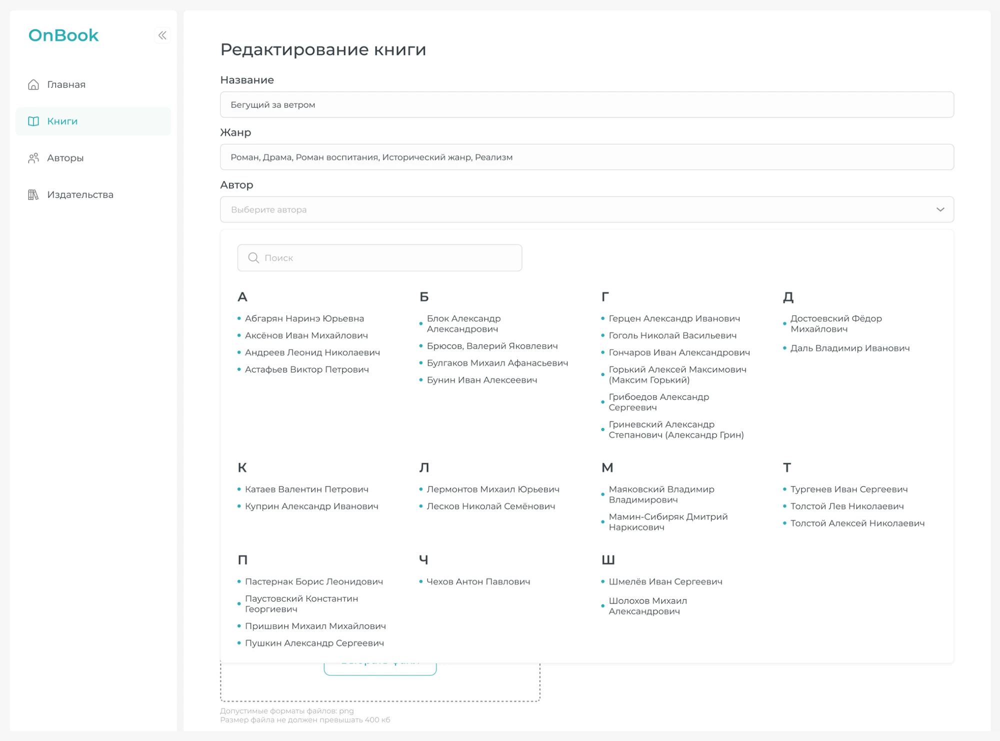
Быстрая навигация
Ключевые разделы теперь в сайдбаре: основные сущности системы всегда под рукой.
Для страниц автора и издательства я добавила переход к связанным книгам. Так контент-менеджеру не нужно вручную искать нужные книги в каталоге — система сразу показывает релевантный список.
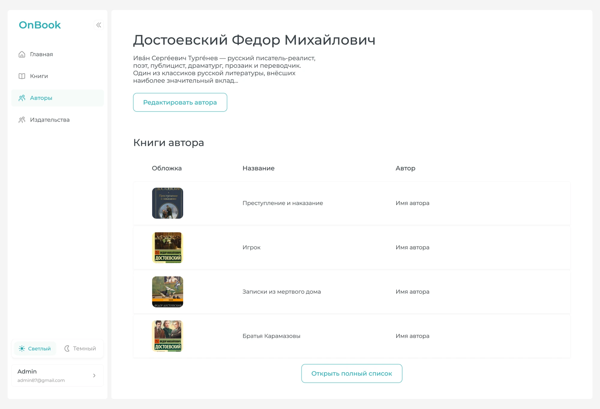
Главная страница с метриками
Я спроектировала главную страницу как стартовый экран с ключевыми показателями.
Эти метрики помогают быстро понять, как развивается платформа: растёт ли аудитория, какие книги популярны, сколько контента уже опубликовано и как меняется активность пользователей.
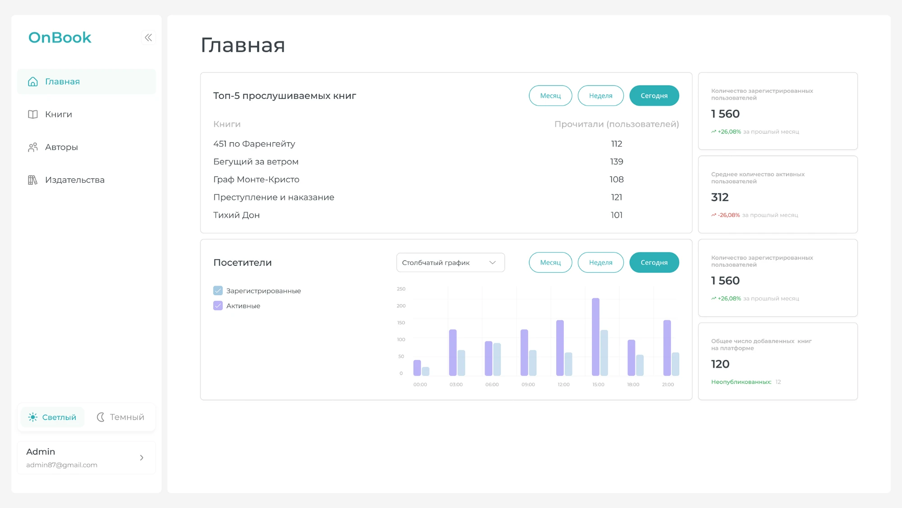
Визуальный стиль и UI kit
Так как админ-панель используется в ежедневной работе, визуальный стиль должен был быть не декоративным, а функциональным. Главными принципами стали читаемость, чистая структура, понятная навигация и удобная работа с большим количеством данных.
Типографика
& Цвета
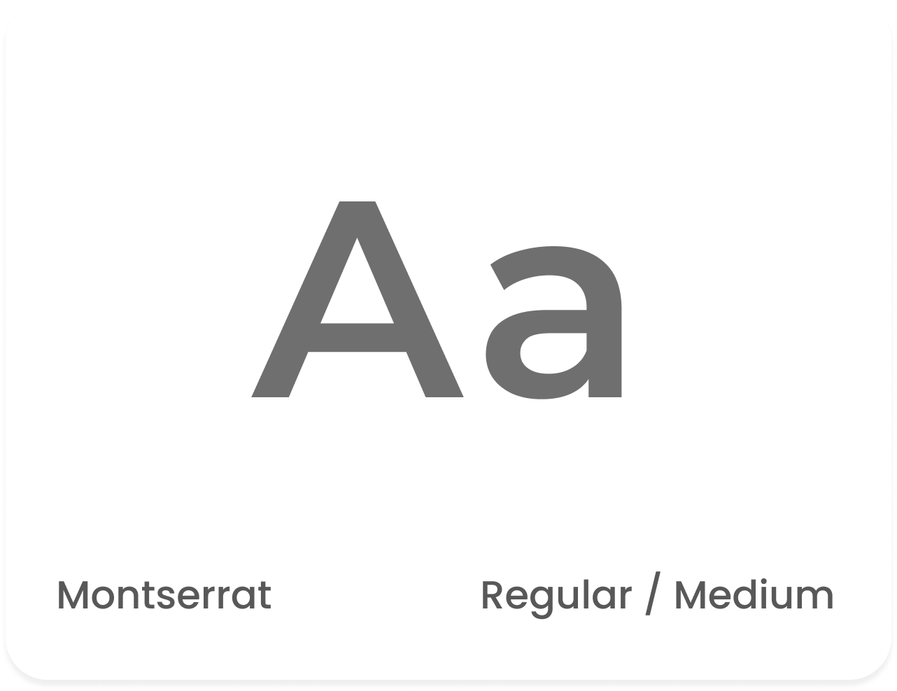
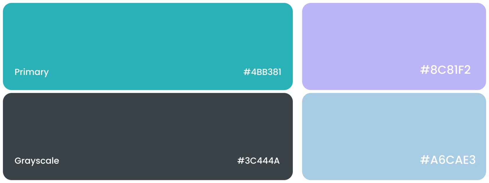
Wireframes
Результаты
Редизайн помог сократить время загрузки одной аудиокниги: раньше на это мог уходить примерно час, после переработки сценария задача стала занимать минуты.
Контент-менеджеры могли загружать больше книг за меньшее время, быстрее проверять аудио и меньше отвлекаться на лишние действия в интерфейсе.
Для бизнеса результат был в ускорении публикации контента: чем проще и быстрее команда загружает книги, тем быстрее пополняется библиотека сервиса.
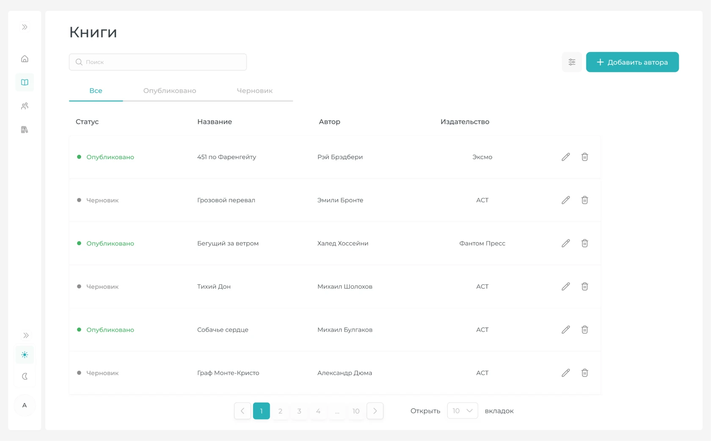
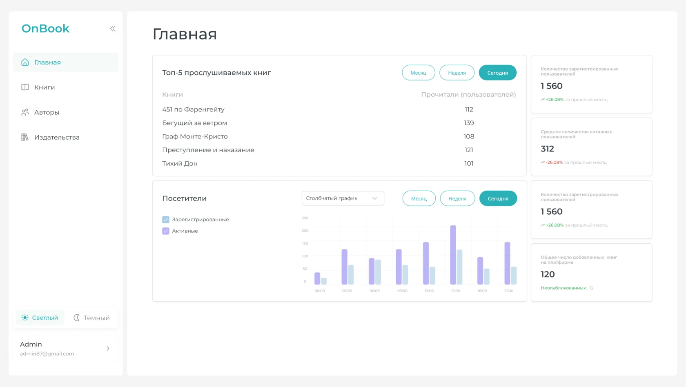
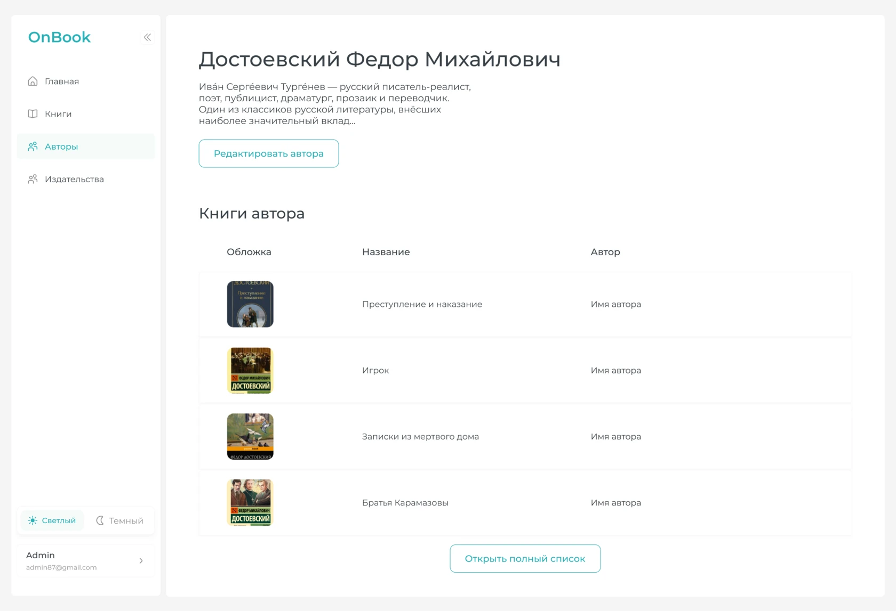
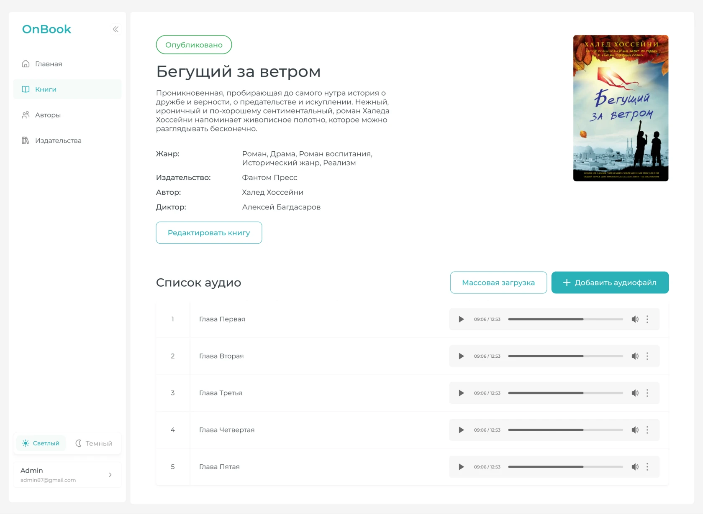